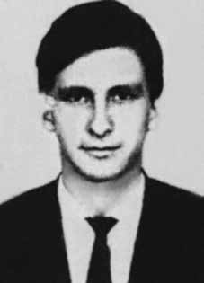

Eiraldo
de Palha
Freire
CIRCUNSTÂNCIAS DA MORTE
Eiraldo Palha Freire morreu no dia 4 de julho de 1970. De acordo com a narrativa apresentada na ocasião pelas forças de segurança do Estado, foi baleado e preso no aeroporto do Galeão, Rio de Janeiro, por militares da Aeronáutica, quando ele, seu irmão, Fernando Palha Freire, e o casal Colombo Vieira de Souza Junior e Jessie Jane, todos militantes da ALN, tentaram sequestrar um avião de passageiros da empresa Cruzeiro do Sul, com o objetivo de trocá-los por presos políticos no dia 1o de julho de 1970. Entre estes, encontrava-se o pai de Jessie, preso político em São Paulo, e a obtenção de sua liberdade era um dos motivos para a realização da ação. Todos foram presos na operação de cerco ao avião conduzida por militares da Força Área Brasileira (FAB). Diante da resistência dos militantes, foi preparada a invasão da aeronave. Os militares atiraram nos pneus dos trens de pouso e, horas depois, iniciaram a entrada no aparelho. Em um primeiro momento, jogaram uma espuma mecânica e pó químico seco. Neste instante, militares foram colocados em todas as portas e, momentos depois, arrombaram-nas e jogaram gás lacrimogêneo no interior do avião. Na sequência, de acordo com os relatos nos depoimentos dos militantes e daqueles que estiveram presentes, tiros foram ouvidos e todos os militantes foram presos. O depoimento da militante Jessie Jane aponta que, logo depois da concretização das prisões, comandadas pelo Brigadeiro João Paulo Burnier, ela e Eiraldo foram levados para as dependências do Centro de Investigações da Aeronáutica (CISA), na Base Aérea do Galeão. Neste local, os militares retiraram suas roupas e iniciaram sessões de torturas. Na madrugada do dia 2 de julho, foram levados para a sede do DOI-CODI, que funcionava na rua Barão de Mesquita, no bairro da Tijuca, no Rio de Janeiro. Lá, continuaram a ser torturados. Em um dado momento, foram encaminhados para uma sala e colocados um diante do outro para confirmação de informações. Segundo Jessie Jane, os militares achavam que Eiraldo fosse seu companheiro e, em sua avaliação, sua presença buscava torná-lo ainda mais vulnerável. Jessie afirma que os dois não se falaram. Ela ainda notou que Eiraldo se encontrava ferido e parecia inconsciente. Os documentos oficiais acerca do registro de sua morte apresentam contradições, o que reforça a versão de Jessie. O exame de corpo de delito, feito no Hospital da Aeronáutica no dia anterior à morte de Eiraldo, quando ele já estava em coma, ressalta que o militante havia levado um tiro. Contudo, a necropsia descreveu escoriações em seu corpo, como na região da testa e no nariz, além de incisões cirúrgicas nas regiões temporais e traqueostomia, o que parece indicar sinais de tortura. O coronel Lúcio Valle Barroso, em depoimento à Comissão Nacional da Verdade, no dia 9 de junho de 2014, confirma que foi ele quem atirou em Eiraldo no momento em que os agentes da repressão realizaram a invasão da aeronave e que o militante veio a falecer no hospital. Além de Lúcio Valle Barroso, outro agente da Aeronáutica que servia na Base Aérea do Galeão à época dos acontecimentos relatou que Eiraldo veio a morrer em razão dos tiros que recebeu durante a operação de retomada do avião. Eiraldo foi sepultado pela família no Cemitério São Francisco Xavier, no Rio de Janeiro.
Eiraldo Palha Freire died on July 4, 1970. According to the narrative presented at the time by the State security forces, he was shot and arrested at Galeão airport, Rio de Janeiro, by Air Force soldiers, when he, his brother, Fernando Palha Freire, and the couple Colombo Vieira de Souza Junior and Jessie Jane, all ALN militants, tried to hijack a Cruzeiro do Sul passenger plane, with the aim of exchanging them for prisoners. politicians on July 1, 1970. Among them was Jessie's father, a political prisoner in São Paulo, and obtaining his freedom was one of the reasons for carrying out the action. All were arrested in the operation to siege the plane conducted by military personnel from the Brazilian Air Force (FAB). Faced with resistance from the militants, an invasion of the aircraft was prepared. The military shot the tires of the landing gear and, hours later, began to enter the device. Firstly, they added mechanical foam and dry chemical powder. At that moment, soldiers were stationed at all the doors and, moments later, they broke them down and threw tear gas inside the plane. Subsequently, according to reports in the statements of the militants and those who were present, shots were heard and all the militants were arrested. The testimony of activist Jessie Jane points out that, shortly after the arrests were made, commanded by Brigadier João Paulo Burnier, she and Eiraldo were taken to the premises of the Aeronautics Research Center (CISA), at the Galeão Air Base. There, the soldiers removed their clothes and began torture sessions. In the early hours of July 2, they were taken to the DOI-CODI headquarters, which operated on Rua Barão de Mesquita, in the Tijuca neighborhood, in Rio de Janeiro. There, they continued to be tortured. At a given moment, they were taken to a room and placed in front of each other to confirm information. According to Jessie Jane, the military thought that Eiraldo was their companion and, in their opinion, his presence sought to make him even more vulnerable. Jessie claims the two haven't spoken. She also noticed that Eiraldo was injured and seemed unconscious. The official documents regarding the registration of his death present contradictions, which reinforces Jessie's version. The forensic examination, carried out at the Aeronautics Hospital the day before Eiraldo's death, when he was already in a coma, highlights that the militant had been shot. However, the autopsy described abrasions on his body, such as on the forehead and nose, as well as surgical incisions in the temporal regions and tracheostomy, which seems to indicate signs of torture. Colonel Lúcio Valle Barroso, in a statement to the National Truth Commission, on June 9, 2014, confirms that it was he who shot Eiraldo at the moment the repression agents invaded the aircraft and that the militant died in the hospital. In addition to Lúcio Valle Barroso, another Air Force agent who served at Galeão Air Base at the time of the events reported that Eiraldo died as a result of the shots he received during the operation to retake the plane. Eiraldo was buried by his family at the São Francisco Xavier Cemetery, in Rio de Janeiro.
Eiraldo Palha Freire murió el 4 de julio de 1970. Según el relato presentado en la época por las fuerzas de seguridad del Estado, fue baleado y detenido en el aeropuerto de Galeão, Río de Janeiro, por soldados de la Fuerza Aérea, cuando él, su hermano, Fernando Palha Freire, y el matrimonio Colombo Vieira de Souza Junior y Jessie Jane, todos militantes de la ALN, intentaban secuestrar un avión de pasajeros del Cruzeiro do Sul, con el objetivo de canjearlos por prisioneros. políticos el 1 de julio de 1970. Entre ellos se encontraba el padre de Jessie, preso político en São Paulo, y obtener su libertad fue uno de los motivos para llevar a cabo la acción. Todos fueron detenidos en la operación de asedio al avión realizada por militares de la Fuerza Aérea Brasileña (FAB). Ante la resistencia de los militantes, se preparó una invasión de la aviación. Los militares dispararon a los neumáticos del tren de aterrizaje y, horas después, comenzaron a ingresar al aparato. En primer lugar, agregaron espuma mecánica y polvo químico seco. En ese momento, militares se apostaron en todas las puertas y, momentos después, las derribaron y arrojaron gases lacrimógenos al interior del avión. Posteriormente, según consta en las declaraciones de los militantes y de los presentes, se escucharon disparos y todos los militantes fueron detenidos. El testimonio de la activista Jessie Jane señala que, poco después de las detenciones, comandadas por el brigadier João Paulo Burnier, ella y Eiraldo fueron llevados a las instalaciones del Centro de Investigaciones Aeronáuticas (CISA), en la Base Aérea de Galeão. Allí, los soldados se quitaron la ropa y comenzaron sesiones de tortura. En la madrugada del 2 de julio fueron trasladados a la sede del DOI-CODI, que funcionaba en la Rua Barão de Mesquita, en el barrio de Tijuca, en Río de Janeiro. Allí continuaron siendo torturados. En un momento dado, fueron llevados a una habitación y colocados uno frente al otro para confirmar información. Según Jessie Jane, los militares pensaban que Eiraldo era su compañero y, en su opinión, su presencia buscaba hacerlo aún más vulnerable. Jessie afirma que los dos no han hablado. También notó que Eiraldo estaba herido y parecía inconsciente. Los documentos oficiales sobre el registro de su muerte presentan contradicciones, lo que refuerza la versión de Jessie. El examen forense, realizado en el Hospital Aeronáutico la víspera de la muerte de Eiraldo, cuando ya se encontraba en coma, destaca que el militante había sido baleado. Sin embargo, la autopsia describió abrasiones en su cuerpo, como en la frente y la nariz, así como incisiones quirúrgicas en las regiones temporales y traqueotomía, lo que parece indicar signos de tortura. El coronel Lúcio Valle Barroso, en declaración ante la Comisión Nacional de la Verdad, el 9 de junio de 2014, confirma que fue él quien disparó contra Eiraldo en el momento en que los agentes de represión invadieron el avión y que el militante murió en el hospital. Además de Lúcio Valle Barroso, otro agente de la Fuerza Aérea que prestaba servicios en la Base Aérea de Galeão en el momento de los hechos informó que Eiraldo murió a consecuencia de los disparos que recibió durante el operativo para retomar el avión. Eiraldo fue enterrado por su familia en el cementerio São Francisco Xavier, en Río de Janeiro.